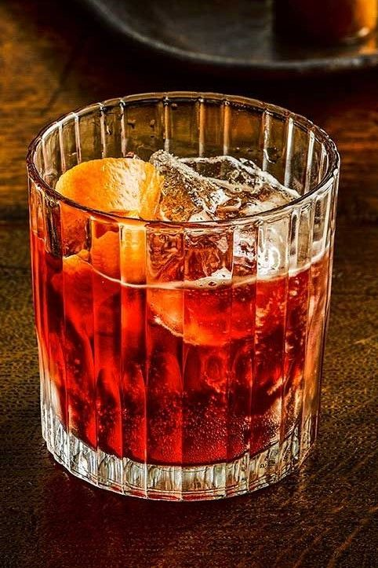

The Boulevardier

Description
Basically a
Negroni with bourbon replacing gin. The
original 1927 recipe calls for equal parts, but I've previously favoured a
3:2:2 fl oz (45ml bourbon, 30ml rosso vermouth, 30ml Italian red bitter
liqueur) recipe. Popular demand has led me to adopt a 2:1:1 recipe as I
have to concede it's better balanced.
Ingredients
- Bourbon whiskey 1 1/2 or 2 fl oz (to taste)
- Campari bitter liqueur 1 fl oz
- Italian rosso (red) vermouth 1 fl oz
-
Always garnish with an orange zest twist
not an orange slice – it should be more carefully
balanced than a Negroni.
Steps
- Add all ingredients to a mixing glass with ice
- Add ice to an Old Fashioned glass
-
STIR all ingredients for 20-40 revolutions (a drink should be cool but a
bit on a boozy side to prolong dilution in the glass)
-
Strain into ice-filled glass (preferably over a large cube or chunk of
block ice)
- Garnish with an Orange zest twist